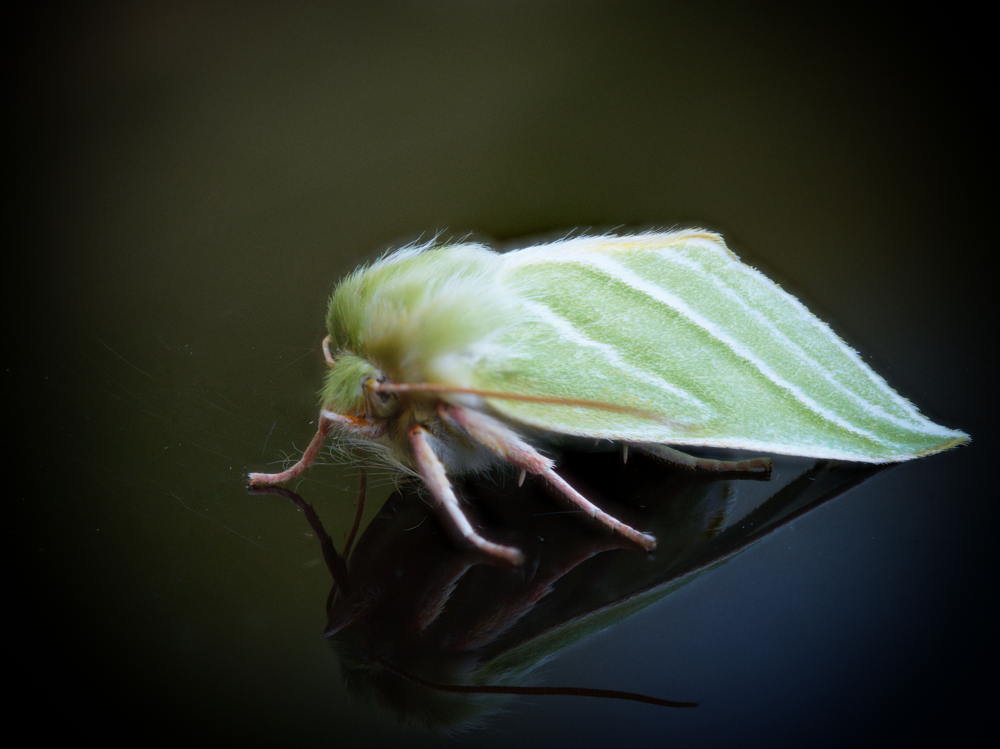
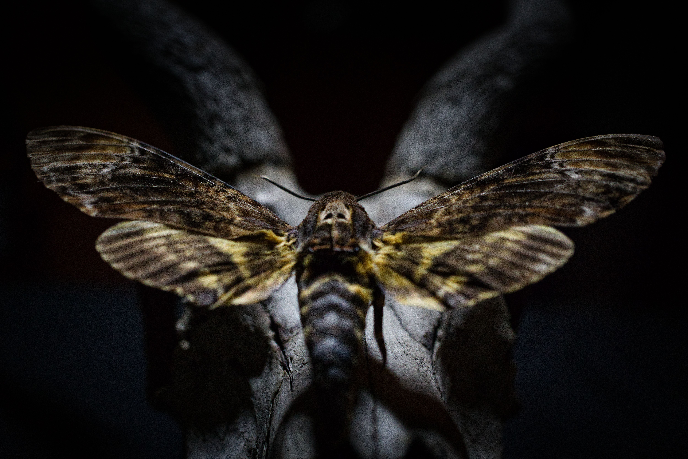

50k+
Insect images and specimens
1000+
Moth species targeted
200–2700m
Himalayan elevation gradients
51+
Indian weather radars
Research Vision
Insects are everywhere, yet much of their diversity and movement remains invisible to us.
My research asks how new technologies can help us observe insects at scales that were previously impossible: across mountains, seasons, communities, colour patterns, wing traits and atmospheric movement.
Core Themes
A research programme built across scales.
I work across field sites, image datasets, radar networks and computational pipelines to understand how insects respond to climate, landscapes, morphology and ecological interactions.
Insect biodiversity
Documenting moth diversity across Himalayan landscapes and understanding how communities change with elevation, climate and habitat.
Traits and morphology
Measuring wing shape, body size, colour, reflectance and pattern structure to connect form with ecology, flight and survival.
Radar ecology
Repurposing weather radar networks to monitor aerial insect abundance, emergence and movement across large spatial and temporal scales.
AI and image processing
Developing reproducible computational pipelines for extracting biological information from large image collections.
Atmospheric movement
Studying how wind, rain, monsoon systems and atmospheric stability influence when and where insects move through the air.
Conservation futures
Building scalable monitoring approaches that can support biodiversity conservation in a rapidly changing world.
Himalayan Moth Communities
Colour, traits and community assembly in mountain landscapes.
A major part of my research focuses on moth communities in Arunachal Pradesh and across the Himalaya. These landscapes contain extraordinary insect diversity, but also steep gradients in temperature, vegetation, light environment, predation and seasonality.
I use field collections, standardized imaging, morphology, colour analysis, phylogenetics and community ecology to ask how moths are filtered by environment, how colour patterns evolve, and how traits shape survival across elevation.
Moths · Colour · Elevation · Community ecology

Radar Remote Sensing
Using weather radars to study life in the air.
Weather radars were designed to observe rain, but they also detect the biological particles moving through the atmosphere. My work explores how these national-scale sensing networks can be repurposed to monitor aerial insects, quantify biomass and understand movement through changing weather systems.
From radar-based insect abundance in the UK to emerging work with dual-polarization radar near Bhopal, I am interested in building methods that reveal insect activity at the scale of landscapes, seasons and atmospheric processes.
Weather radar · Aerial biomass · Movement ecology
AI, Imaging and Data
Turning images into ecological information.
Many insect traits are visible, but difficult to measure manually at scale. I use computer vision, image processing and machine-learning approaches to extract morphology, colour, pattern and trait information from large biological image datasets.
These methods make it possible to compare thousands of individuals, quantify subtle variation and link image-derived traits to ecology, climate, behaviour and evolutionary history.
Computer vision · Feature extraction · AI

Field ecology, computation and atmospheric science in one research programme.
My work moves between forests, mountain transects, laboratory imaging setups, radar archives and code. The goal is to build a richer ecological picture of insects than any one method can provide alone.




Hello, I’m Mansi
Ecologist. Remote sensing scientist. Storyteller.
I am an Assistant Professor working at the interface of ecology, remote sensing and artificial intelligence. My research is driven by a simple question: how can we observe the ecological processes that are too small, too fast, too numerous or too hidden for conventional monitoring?
I am especially interested in insects because they underpin ecosystems through pollination, nutrient cycling, decomposition and as food for other animals. Yet their diversity and movement remain severely under-observed.
Learn More About My Research
Interested in ecology, radar, insects or AI?
I welcome conversations with students, collaborators, researchers, conservation groups and anyone curious about the hidden biodiversity moving around us.
Contact Me